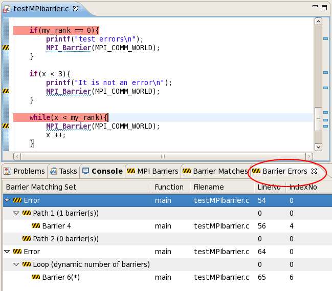

A common source of errors in SPMD (Single Program Multiple Data) programming causes deadlocks when barrier statements, in which all tasks must synchronize, are not matched properly. If one MPI task in a communicator does not pass through the same number of MPI_Barrier statements as the other tasks in the same communicator, the other tasks will deadlock while waiting.
The PLDT MPI Barrier analysis checks an SPMD program and determines whether there are deadlocks due to the misplacement of barriers. We will report errors if any, and "matching sets" for each barrier if error-free. The matching set of a barrier contains all barriers that synchronize with it at run time.
For example, consider the second if-branch in testMPIbarrier.c.
if(my_rank == 0){
printf("test errors\n");
MPI_Barrier(MPI_COMM_WORLD);
}
The program will become deadlocked on the above branch because some processors
will execute the global barrier in the branch while the others will skip it. However,
one cannot expect an error if barriers are not "textually" aligned.
Now, consider the
third if-branch in testMPIbarrier.c.
if(x < 3){
printf("It is not an error\n");
MPI_Barrier(MPI_COMM_WORLD);
}
Even if we only have a barrier in the then clause but
not in the else clause, there is no error since all processors agree on the branch
predicate, and they will choose the same way to go.
To run the barrier analysis, select a project, container, or source file in the C/C++ projects view, and click the MPI barrier analysis action in the toolbar.
The barrier analysis produces three views of information:
The Barrier Artifact View lists all barriers in the program(s), their enclosing function names, filenames, line numbers, and index numbers (beginning from 1). In the other two views, barriers are referred to according to their index numbers (e.g., the barrier with index number 1 is called "barrier 1").
By running the analysis, we will show two kinds of results:
The matching sets are shown in the Barrier matching set view. The number following each parent barrier shows the size of its matching set. Note that if a matching error occurs in a statement, then barriers used in this statement MIGHT have empty matching set (they MIGHT still have non-empty matching set if they are also used in other portions of the program). This is one of the advantages of our analysis: if an error occurs, our analysis can "recover" from such an error by continuing to analyze other portions of the program that are not affected by such error.
When a barrier error is detected, it is highlighted in the editor (red arrows). In additon, a counter example is shownwhich contains two sequences of barriers which have different sizes along two paths starting from the highlighted error position. This counter example simulates? an execution and illustrates the reason of the synchronization error. Note that a synchronization error occurs if different MPI tasks meet a different number of barriers. If a barrier b is in a loop, and all tasks execute the same number of iterations, then barrier b is marked by "*", which means that the static barier in the counter example reperesents a dynamic number of barriers at runtime. If a synchronization error occurs on a loop (i.e., different tasks will execute a different number of iterations of such loop), then we show the counter example as the sequence of barriers in the loop body.

We use this simple program to ilustrate the basic functionality of the analysis and three views. There are two branches and one loop in the program. The first loop is synchronization error free; two barriers (one in such loop, and the other in barrier() function) match to each other. The second branch contains an error because some tasks would execute the barrier in it, while the other tasks would skip it. The loop contains an error also, since different tasks may execute different number of iterations thus different number of barriers.
MPB is a scientific application which computes the electromagnetic model using maxwell equations. We use this example to show the following points:
(1) Our analysis has inter-procedural analysis. This makes our analysis tool outperform the previous intra-procedural analysis in Berkeley.
(2) Try this to show the necessity and effectiveness of the inter-procedural analysis. In the original code, there are three barriers: two in function matrixio_create_sub(), and one in matrixio_create_dataset(). Obviously two barriers in matrixio_create_sub() match to each other. Now comment out "barrier 1" (the one in the then clause of the if-branch in matrixio_create_sub()), add a barrier in function mpi_is_master(), right after the MPI_Comm_rank call, then run the analysis. One may expect a synchronizatio error in this branch, however it is still error free, since the function matrixio_write_string_attr() will call mpi_is_master() somewhere. (matrixio_write_string_attr --> write_attr --> mpi_is_master)
Tcgmsg is an MPI toolkit. Same as MPB, we use it to demonstrate the inter-procedural analysis. There are some interesting points in the function test_main():
(1) At the beginning of test_main(), the master thread reads a parameter "opt" from stdout (the first while loop), and broadcasts it to other threads (by BRDCST_) so that they obtain the same "opt". All threads then choose some job to do according to the value of "opt". No synchronization occurs in the original code. If the master thread doesn't broadcast the "opt" value, then different processors will choose different jobs, and an error occurs (no barrier are used in cast 0-4, while some barriers are used in case 5).
(2) This program also illustrates how errors (and counter examples) are reported for the "switch" statement. Briefly, we will only show the "first" error, i.e., if the switch statement contains n cases, we will always begin from the first two cases, and move to the next case ONLY IF the first two cases are error-free. To test it, if we add a barrier in case 0 clause, then an error will be reported, and one path in the counter example contains 1 barrier (the barrier we've just added in), and the other path contains no barrier (case 1 clause).